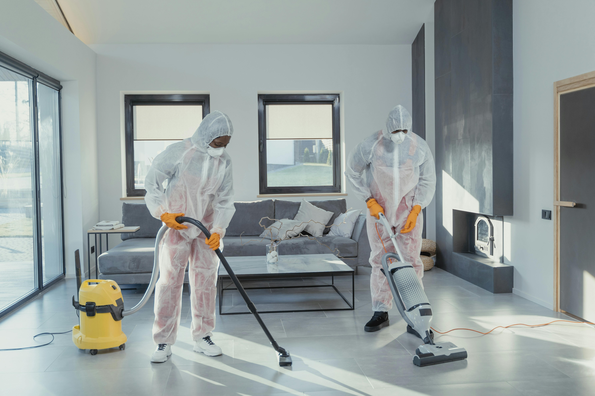

Unsere Leistungen im Überblick
Ob Büro, Praxis, Gewerbeobjekt oder Treppenhaus – wir bieten zuverlässige, gründliche und flexible Reinigung mit einem professionellen Anspruch an Qualität, Sauberkeit und Service.

Eine saubere Immobilie vermittelt Professionalität, Qualität und Vertrauen. Unsere Gebäudereinigung sorgt dafür, dass Ihre gewerblichen oder privaten Objekte stets gepflegt, hygienisch und repräsentativ bleiben.
Dabei achten wir nicht nur auf sichtbare Sauberkeit, sondern auch auf Werterhalt, nachhaltige Pflege und eine zuverlässige, regelmäßig planbare Ausführung. Unser Ziel ist ein Ergebnis, das dauerhaft überzeugt.
Regelmäßige Reinigung unterstützt den langfristigen Erhalt Ihrer Immobilie.
Saubere Gebäude wirken gepflegt und vertrauenswürdig auf Kunden und Besucher.
Ein gepflegtes Büro schafft nicht nur einen besseren Eindruck bei Kunden und Geschäftspartnern, sondern steigert auch das Wohlbefinden und die Motivation Ihrer Mitarbeiter im Alltag.
Wir reinigen Büroräume zuverlässig und diskret – angepasst an Ihre Arbeitszeiten und internen Abläufe. Ob kleine Büroeinheit oder größere Gewerbefläche: Wir sorgen für Struktur, Hygiene und ein angenehmes Umfeld.
Reinigung vor Arbeitsbeginn, nach Feierabend oder individuell nach Absprache.
Wir arbeiten zuverlässig und professionell, ohne Ihren Betrieb unnötig zu stören.
In Arztpraxen, Therapiezentren und anderen medizinischen Einrichtungen gelten besonders hohe Anforderungen an Sauberkeit, Hygiene und Zuverlässigkeit. Genau hier setzen wir mit strukturierter und gewissenhafter Reinigung an.
Wir sorgen für ein Umfeld, in dem sich Patienten, Mitarbeiter und Besucher sicher und wohl fühlen können. Dabei arbeiten wir diskret, sauber und mit besonderem Blick für hygienisch sensible Kontaktflächen.
Besondere Aufmerksamkeit für sensible Räume und häufig genutzte Flächen.
Saubere Abläufe und regelmäßige Pflege für konstante Qualität.
Neben klassischen Reinigungsarbeiten bieten wir weitere Leistungen, die für Ordnung, Pflege und einen dauerhaft gepflegten Gesamteindruck sorgen. So erhalten Sie auf Wunsch mehrere Services aus einer Hand.
Ob regelmäßige Unterhaltsreinigung, Treppenhauspflege oder Fenster- und Glasreinigung – wir stimmen den Umfang individuell auf Ihr Objekt und Ihre Anforderungen ab.
Mehrere Leistungen können flexibel zu einem passenden Gesamtpaket verbunden werden.
Klare Abstimmung und zuverlässige Umsetzung ohne unnötigen Aufwand für Sie.

Kontaktieren Sie uns für ein kostenloses und unverbindliches Angebot. Gemeinsam finden wir die passende Lösung für Ihr Objekt, Ihren Zeitplan und Ihre Anforderungen.
Jetzt Angebot anfragen